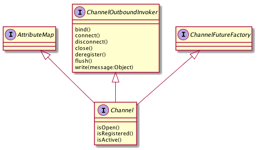

最近有个需要要求让 JBoss AS 7 支持WebSocket请求。遇到这样的问题，我的第一反应就是去想办法去换掉 Jboss AS 7 中的tomcat 容器或者把HTTP请求转发到另外一个容器中。一个老外 JBoss 7 and WebSocket 中就这么干的。但是觉得还存在一些问题。 所以一直在尝试其他方案，突然一天看到了Netty的架构图。发现他居然支持WebSocket接入。如果我做一个subsystem，把Netty装进去是不是就可以解决这个问题呢？
有这如上的想法以后，就得去验证。验证的第一步就是确定Netty是否真的能够支持WebSocket。什么话都不用说了上让代码证明一切吧！
